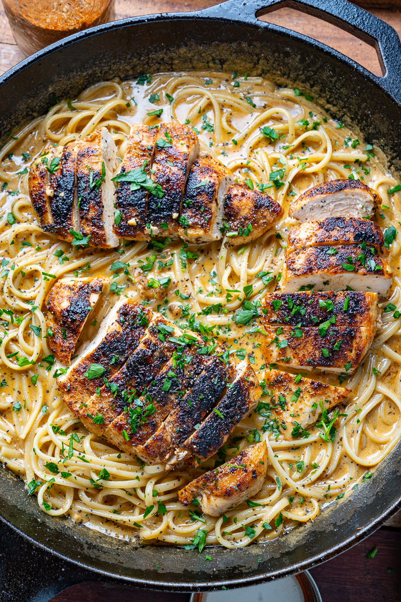

Cajun Chicken Alfredo

Description:
Maybe you were looking for something heavier, more potent after the two previous recipes. This chicken alfredo is the perfect,
creamy, recipe with a little kick from the cajun seasoning. The key to making a good alredo sauce is enough seasoning
and not too much cream, otherwise it will just become a thick coating of nothingness. This recipe takes care of that issue
by creating the perfect balance of spices yet creaminess, topped with mouth-watering chicken.
Makes 4-6 servings
- 8 ounces pasta
- 1 tbsp oil
- 1 tbsp butter
- 1 pound boneless chicken breasts (or thighs)
- 2 tsp cajun seasoning
- 2 cloves garlic, minced
- 1/4 cup dry white wine (or chicken broth)
- 3/4 cup freshly shaved parmesan
- 1/2 cup heavy/whipping cream
- Cajun seasoning to taste
Directions:
- Cook pasta as directed on package
- While pasta is cooking, heat oil and melt butter in a skillet
over medium-high heat, season chicken with cajun, add to pan and sear until cooked,
about 3-5 minutes, pull out when done and set aside
- Add garlic to pan and saute until fragrant, about 1 minute
- Add wine to pan and deglaze by scraping off any bits from the bottom. Alternatively, if using chicken broth, add it in now and do the same.
- When the wine has reduced to about half its original volume, add heavy cream, parmesan, and cajun seasoning to taste.
Continue mixing and tasting until everything has blended to a nice consistency, about 3-5 minutes.
- Mix in pasta with a little pasta water as to bind sauce to the pasta, and top with cooked chicken. Enjoy!